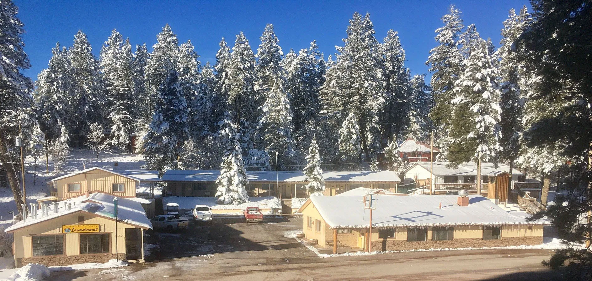
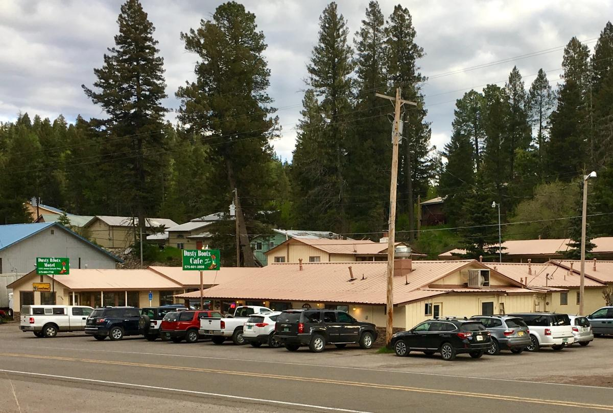
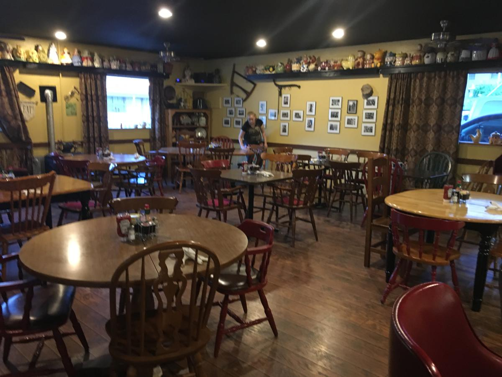
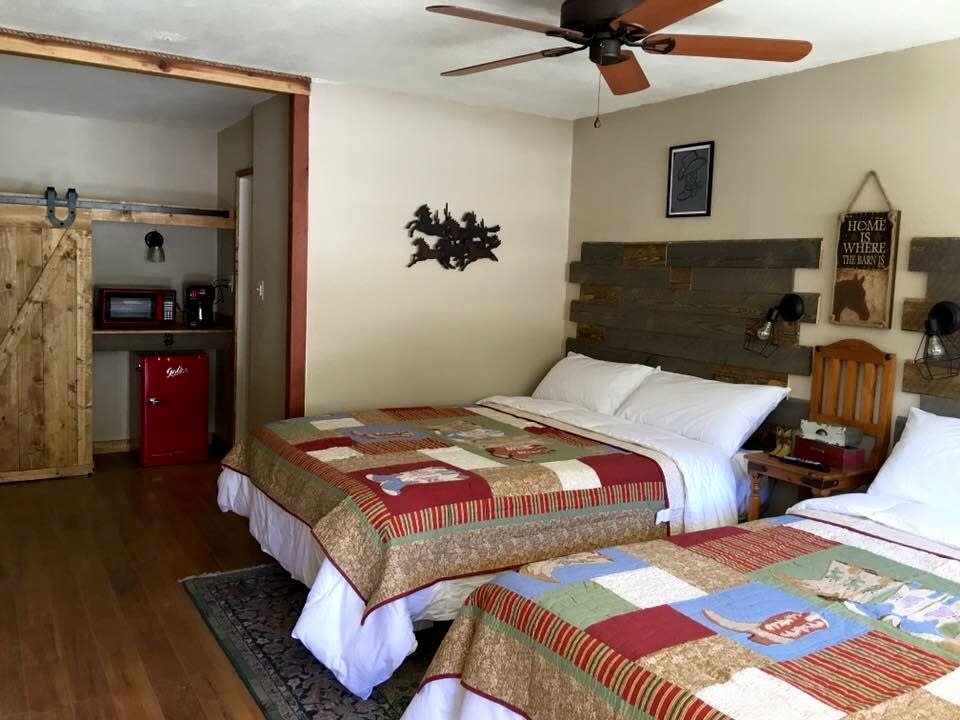
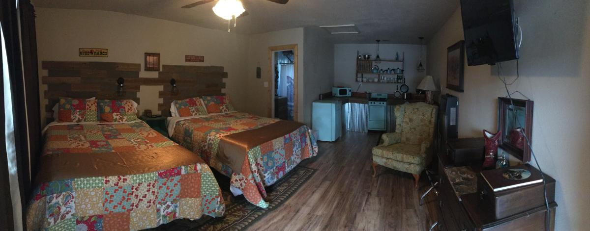
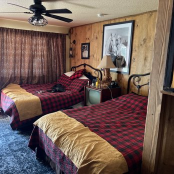
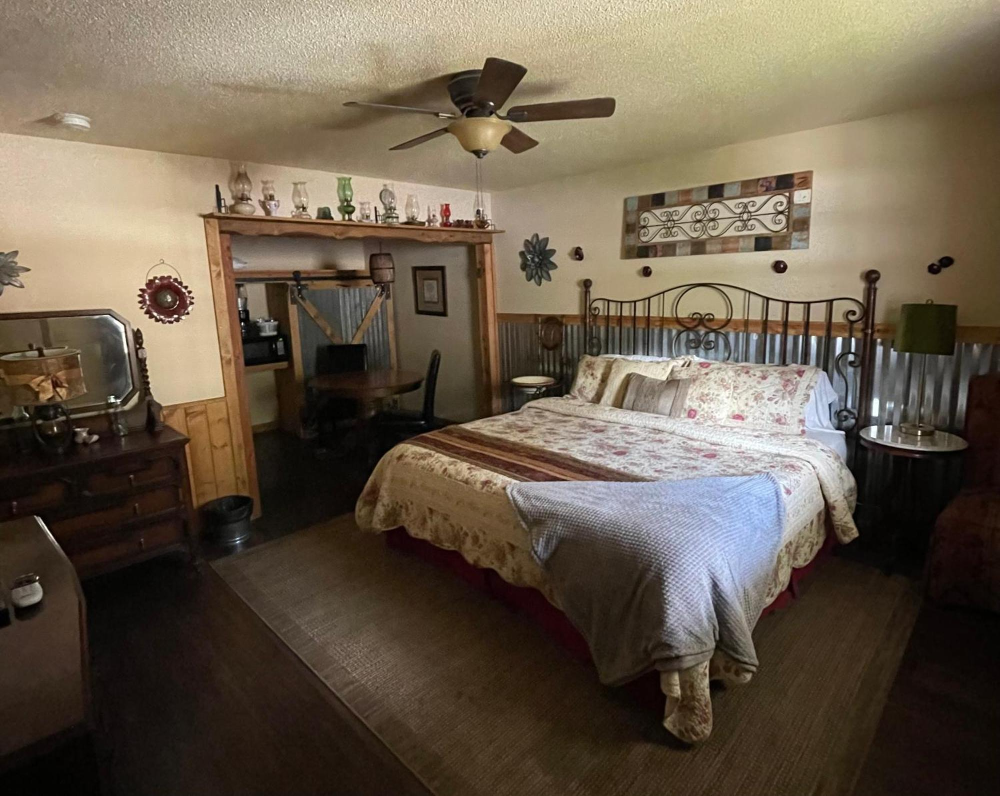
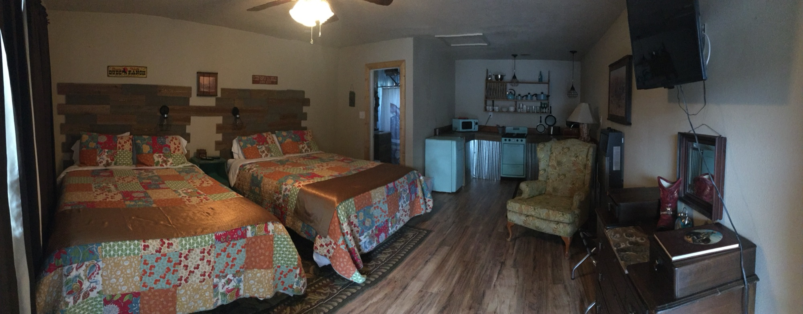

Not Your Average Motel
The Dusty Boots started life as the Aspen Motel. Under current ownership it's been transformed room by room into one of the most distinctive places to stay in the Sacramento Mountains. Each of the 15 rooms has its own fully realized theme — complete with antiques, quilts, custom decor, and details you won't find anywhere else. At least one room features a watering-can showerhead and a canoe suspended from the ceiling.
The on-site Dusty Boots Cafe serves three meals daily in summer, with more than 90 percent of the menu made from scratch. Saturday evenings bring a German-themed dinner — schnitzel, bratwurst, sauerbraten, and housemade spaetzle. Motel guests receive a dining discount. The owners are hands-on, genuinely hospitable, and full of local knowledge about trails, conditions, and what's worth the drive.
The property sits on James Canyon Highway, 0.7 miles from the village center — a short drive to Burro Avenue and within walking distance of Lincoln National Forest trails and a city park.

15 Themed Rooms
Every room has its own personality. All include memory foam mattresses, high thread-count cotton sheets, hypoallergenic comforters, and thick cotton towels.
| Room Type | Beds | Notes |
|---|---|---|
| Deluxe Single | 2 Queen Beds | Mountain view available; memory foam beds |
| Deluxe Room | Multiple Beds | Living area; 40" flat-screen TV |
| Superior Double | 2 Queen Beds | Kitchenette (fridge, microwave, stovetop) |
| Standard King | 1 King Bed | Standard room |
Confirmed Room Themes
Each room is individually decorated — themes rotate as renovation continues. These have been confirmed by recent guests:
Highway noise: Some rooms face James Canyon Highway. If you're a light sleeper, request a room away from the road when booking.
The Dusty Boots Cafe
Open daily in summer. More than 90% made from scratch. Open to the public — expect a wait on weekend mornings.
Breakfast — 7:00 AM to Noon
Morning Menu
Biscuits and gravy, French toast, pancakes, and made-from-scratch staples. Motel guests receive a dining discount. Arrive early on weekends — it gets busy.
Lunch & Dinner — Noon to 9:00 PM
All-Day Menu
BLTs, patty melts, chicken strips, taco platters, steak and shrimp. The menu rotates — nearly everything is made from scratch in-house.
Saturday Evenings — 5:00 to 8:00 PM
German Dinner Night
Schnitzel, sauerbraten, bratwurst, German meatballs, spaetzle, and housemade cottage rolls. A weekly highlight that draws both guests and locals.
Nightly Complimentary
Banana Bread
Every motel guest receives complimentary banana bread in the evening — one of the most frequently mentioned touches in guest reviews.
Hours listed are summer hours. Confirm winter and shoulder-season cafe hours directly with the property before your visit.
The Dusty Boots Experience
What sets this motel apart from every other option in the Sacramento Mountains.
Rooms With Real Character
Each of the 15 rooms is a fully realized theme — not a framed poster and a color palette, but antiques, custom fixtures, quilts, and details you'll actually remember. Roy Rogers, Harry Potter, Route 66, Antique Rose, and more.
Scratch-Kitchen Cafe On-Site
More than 90% of the menu is made from scratch. Breakfast, lunch, and dinner daily in summer — plus a German dinner every Saturday night. Motel guests get a dining discount.
Pedego E-Bike Rentals
Dusty Boots is an authorized Pedego electric bike dealer. Rent an e-bike on-site and explore Lincoln National Forest trails without needing to drive to a trailhead or rental shop.
Hot Tub & Lounge
An on-site hot tub, laundromat, and 24-hour front desk make this genuinely convenient for longer stays — especially after full days on the trails or slopes.
Pet-Friendly
Pets are allowed on request — call ahead to confirm and ask about any charges. One of the more dog-welcoming options in the Cloudcroft area.
Winter Sled Loans
In winter, the property loans sleds to guests for snow play — a small but memorable touch that reflects the owners' approach to hospitality throughout the property.
From 1315 James Canyon Highway
Cloudcroft's top attractions, all within easy reach.
Sacramento Mountains Museum
A 5-minute walk (0.2 miles) from the motel. The museum and Pioneer Village tell the story of Cloudcroft and the Sacramento Mountains from settlement to the present.
Trestle Recreation Area
The Mexican Canyon Railroad Trestle — built in 1899 and one of southern New Mexico's most photographed landmarks — is 1 mile from the motel.
Ski Cloudcroft
The southernmost ski area in the United States is nearby. Rent sleds from the motel or head up for a full day on the slopes in winter.
White Sands National Park
About 60 miles west — a classic day trip from Cloudcroft. Early morning or sunset visits offer the best light on the gypsum dunes.
Before You Book
Key policies and practical details for Dusty Boots.
Location
1315 James Canyon Highway (US-82), Cloudcroft, NM 88317. 0.7 miles from the village center — a 5-minute drive to Burro Avenue. Lincoln National Forest trails are walkable from the property.
Check-In / Check-Out
24-hour front desk with flexible check-in. Early check-in accommodated when available. Confirm check-out time at booking — not published on the property website.
Rates & Booking
From $145/night; average around $172/night. Book direct at thedustyboots.com for the best rate. Also on KAYAK, Hotels.com, Priceline, and Trip.com.
Pets & Policies
Pets allowed on request — call ahead to confirm and ask about fees. Photo ID and credit card required at check-in. Housekeeping available on request, not automatic daily service.
Contact & Book
Book Direct
Phone
Social & E-Bikes
A Look Around
Rooms, cafe, and grounds at Dusty Boots Motel.









Sleep in a Roy Rogers Room. Eat Schnitzel on Saturday.
15 uniquely themed rooms, a scratch-kitchen cafe, hot tub, and Pedego e-bike rentals — on James Canyon Highway at the edge of Lincoln National Forest.